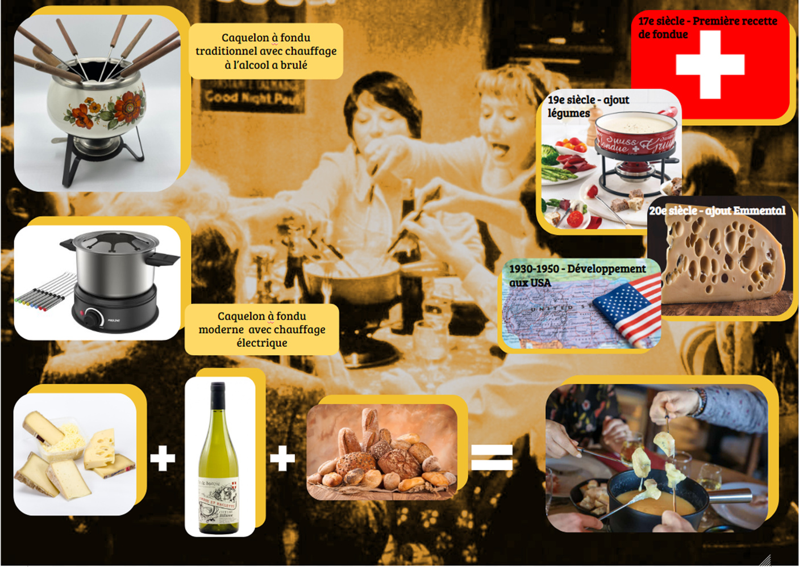
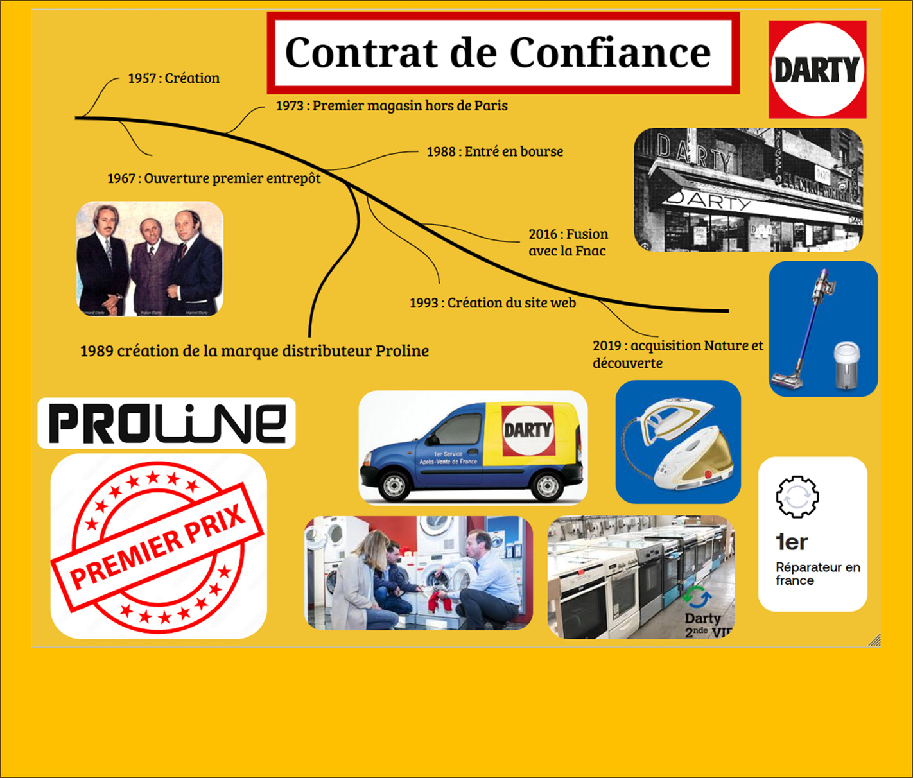
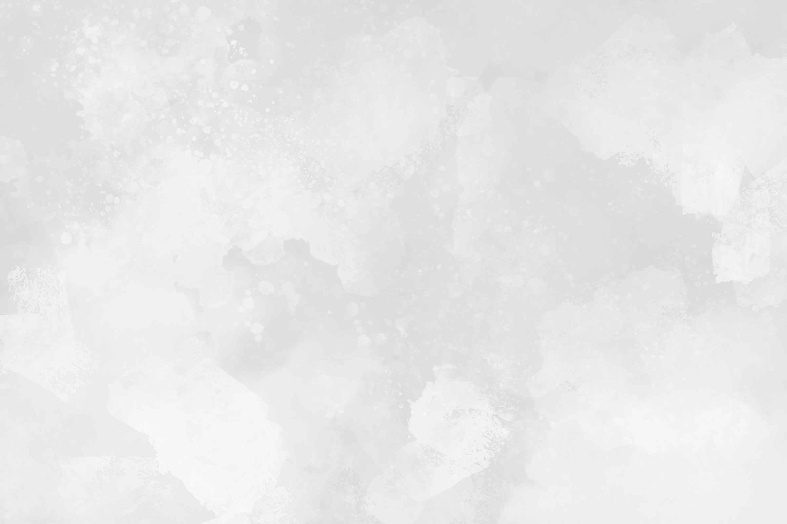
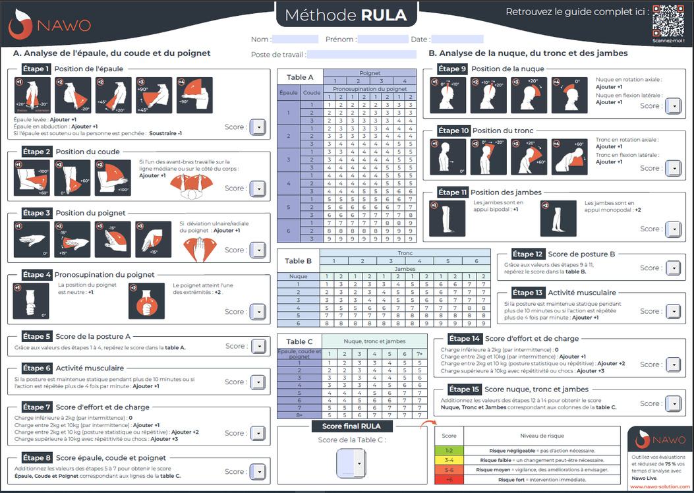

Visuels du projet







EG80 · Ergonomie appliquée
Étude approfondie de l'ergonomie d'un appareil à fondue : diagnostic complet, mesures métrologiques, protocole expérimental et recommandations de conception.
L'UV EG80 place l'ergonomie au cœur d'une étude produit complète. Le défi : analyser en profondeur un objet du quotidien — ici un appareil à fondue — pour en révéler les défauts ergonomiques et formuler des recommandations concrètes de redesign.
L'approche combine plusieurs méthodes complémentaires : analyse naïve, benchmark, questionnaires utilisateurs, métrologie, anthropométrie et protocoles expérimentaux en laboratoire. L'objectif final est un cahier des charges ergonomique précis, exploitable par un bureau de design.
Le produit analysé présente des enjeux de sécurité thermique (surfaces chaudes), de manipulation (lourde, poignées peu ergonomiques) et d'interface (bouton de réglage peu intuitif) — autant de problèmes révélés progressivement par la méthode.



